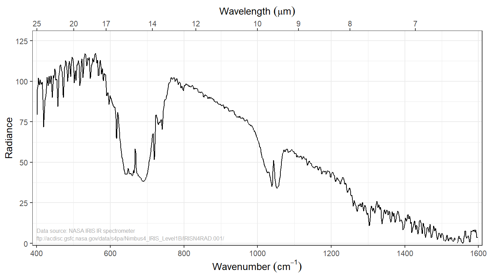

Introducing the Greenhouse Effect
EES 3310/5310
Global Climate Change
Jonathan Gilligan
Class #4: Wed. Aug. 29 2018
Basic Principles from Monday
- Steady temperature means:
- \(\text{Heat}_{\text{out}} = \text{Heat}_{\text{in}}\)
- Heat in:
- Sunlight (shortwave)
- Does not depend on temperature
- Heat out:
- Emitted radiation (longwave)
- Depends on temperature
- If \(\text{Heat}_{\text{out}} \neq \text{Heat}_{\text{in}}\),
- Temperature rises or falls until \[\text{Heat}_{\text{out}} = \text{Heat}_{\text{in}}\]
Temperature
of the Earth
Bare-Rock Model:
No Atmosphere
A subtle point…
- Emissivity \(\varepsilon\) is fraction absorbed
- Albedo \(\alpha\) is fraction reflected
- For an opaque surface, \(\alpha + \varepsilon = 1\)
- So how is \(\alpha = 0.30\) and \(\varepsilon = 1.00\)?
- \(\alpha\) & \(\varepsilon\) are different for shortwave & longwave.
- Shortwave: \(\alpha = 0.30\), \(\varepsilon = 0.70\)
- Longwave: \(\alpha = 0.00\), \(\varepsilon = 1.00\)
Temperature of Earth
(Bare Rock Model)
- \(F_{\text{out}} = F_{\text{in}}\) (Heat flux balances)
- On average, \[F_{\text{in}} = \frac{(1 - \alpha)}{4} I_{\text{solar}}\]
- \(F_{\text{out}} = \varepsilon \sigma T^4\).
- Solve for \(T\):
| \[\large T = \sqrt[4]{\frac{(1-\alpha) I_{\text{solar}}}{4 \varepsilon \sigma }}\] | \[ \begin{align*} I_{\text{solar}} &= 1350~\mathrm{W/m^2}\\ \alpha &= 0.30\\ \varepsilon &= 1\\ \sigma &= 5.67 \times 10^{-8}\, \mathrm{W\, m^{-2}\, K^{-4}}\\ T &= 254~\mathrm{K} = -19\degC = -2\degF \end{align*} \] |
If the sun got 5% brighter,
how much warmer would the earth become?
\[ T = \sqrt[4]{\frac{(1 - \alpha) I_{\text{in}}}{4 \varepsilon \sigma}}\\\]
- Normal:
- \(I_{\text{in}} = 1350~\mathrm{W}/\mathrm{m}^2\)
- \(T = 254~\mathrm{K}\)
- 5% Brighter:
- \(I_{\text{in}} = 1.05 \times 1350~\mathrm{W}/\mathrm{m}^2 = 1418~\mathrm{W}/\mathrm{m}^2\)
- \(T = 257~\mathrm{K}\)
- \(\Delta T = 3~\mathrm{K} = 6^\circ\mathrm{F} = 1.2\%~\text{warmer}\)
Terrestrial Planets
| Earth | Mars | Venus | |
|---|---|---|---|
| Distance from sun | 1 AU | 1.5 AU | 0.72 AU |
| \(1 / \text{Distance}^2\) | 1.00 | 0.44 | 1.9 |
| Solar constant | \(1350~\mathrm{W}/\mathrm{m}^2\) | \(600~\mathrm{W}/\mathrm{m}^2\) | \(2604~\mathrm{W}/\mathrm{m}^2\) |
| Albedo | 0.30 | 0.17 | 0.71 |
| \(T_{\text{bare rock}}\) | \(254~\mathrm{K}~( -2^\circ\mathrm{F})\) | \(216~\mathrm{K}~( -70^\circ\mathrm{F})\) | \(240~\mathrm{K}~( -27^\circ\mathrm{F})\) |
| \(T_{\text{surface}}\) | \(295~\mathrm{K}~( 71^\circ\mathrm{F})\) | \(240~\mathrm{K}~( -28^\circ\mathrm{F})\) | \(700~\mathrm{K}~( 800^\circ\mathrm{F})\) |
| \(\Delta_T\) | \(41~\mathrm{K}~( 74^\circ\mathrm{F})\) | \(24~\mathrm{K}~( 42^\circ\mathrm{F})\) | \(460~\mathrm{K}~( 828^\circ\mathrm{F})\) |
Oops! We forgot the atmosphere!

Does Earth look like a blackbody?
One-Layer Model of the Greenhouse Effect
Layer Model
Sunlight
| Longwave (>3 micron, < 3300/cm) | 2% |
| Shortwave (UV + Vis + Near-IR) | 98% |
Atmosphere
Make simplifying assumptions:
- Perfectly transparent to shortwave light
- Like a pane of glass: \(\varepsilon = 0\)
- Perfectly opaque to longwave light
- Like a blackbody: \(\varepsilon = 1\)
Anything that
transmits most shortwave
and
absorbs most longwave
is a greenhouse gas
Balance of energy for earth system
-
At top of atmosphere: \(F_{\text{out}} = F_{\text{in}}\)
\[ \begin{align*} I_{\text{up, atmos}} &= I_{\text{in}}\quad \small{\text{(intensity of absorbed sunlight)}}\\ \varepsilon \sigma T_{\text{atmos}}^4 &= \frac{(1 - \alpha) I_{\text{solar}}}{4} \end{align*} \]
-
Aha! We can find \(T_{\text{atmos}}\)!
\[ T_{\text{atmos}} = \sqrt[4]{\frac{(1-\alpha)\,I_{\text{solar}}} {4\varepsilon\sigma}} \]
Balance of energy for earth system
\[\large T_{\text{atmos}} = \sqrt[4]{\frac{(1-\alpha)\,I_{\text{solar}}} {4\varepsilon\sigma}}\]
- Just like bare rock model!
- We call this the skin temperature
Balance of energy for atmosphere
Atmosphere: \(\text{Heat}_{\text{in}} = \text{Heat}_{\text{out}}\)
\[ \begin{align*} \color{red}{I_{\text{up,ground}}} &= \color{blue}{I_{\text{up,atm}}} + \color{darkgreen}{I_{\text{down,atm}}}\\ \end{align*} \]
Balance of energy for atmosphere
Atmosphere: heat in = heat out.
\[ \begin{align*} \color{red}{I_{\text{up,ground}}} &= \color{blue}{I_{\text{up,atm}}} + \color{darkgreen}{I_{\text{down,atm}}}\\ \color{blue}{I_{\text{up,atm}}} &= \color{darkgreen}{I_{\text{down,atm}}} = \varepsilon \sigma \color{darkcyan}{T^4_{\text{atm}}}\\ \end{align*} \]
Balance of energy for atmosphere
Atmosphere: heat in = heat out.
\[ \begin{align*} \color{red}{I_{\text{up,ground}}} &= \color{blue}{I_{\text{up,atm}}} + \color{darkgreen}{I_{\text{down,atm}}}\\ \color{blue}{I_{\text{up,atm}}} &= \color{darkgreen}{I_{\text{down,atm}}} = \varepsilon \sigma \color{darkcyan}{T^4_{\text{atm}}}\\ \color{red}{I_{\text{up,ground}}} &= \varepsilon \sigma \color{red}{T^4_{\text{ground}}}\\ \end{align*} \]
Balance of energy for atmosphere
Atmosphere: heat in = heat out.
\[ \begin{align*} \color{red}{I_{\text{up,ground}}} &= \color{blue}{I_{\text{up,atm}}} + \color{darkgreen}{I_{\text{down,atm}}}\\ \color{blue}{I_{\text{up,atm}}} &= \color{darkgreen}{I_{\text{down,atm}}} = \varepsilon \sigma \color{darkcyan}{T^4_{\text{atm}}}\\ \color{red}{I_{\text{up,ground}}} &= \varepsilon \sigma \color{red}{T^4_{\text{ground}}}\\ \varepsilon \sigma \color{red}{T^4_{\text{ground}}} &= 2 \varepsilon \sigma \color{darkcyan}{T^4_{\text{atm}}}\\ \end{align*} \]
Principles:
- Start at the top.
- For each layer, \(\text{Heat}_{\text{out, up}} = \text{Heat}_{\text{out, down}}\)
- Each layer balances \(\text{Heat}_{\text{in, total}} = \text{Heat}_{\text{out, total}}\)
- The bottom layer of the atmosphere tells us \(\text{Heat}_{\text{up, ground}}\)
- Get ground temperature from \(\text{Heat}_{\text{up, ground}}\)
Finish the problem
\[ \begin{align} \varepsilon \sigma \color{red}{T_{\text{ground}}^4} &= 2 \varepsilon \sigma \color{darkcyan}{T_{\text{atm}}^4}\\ \color{red}{T_{\text{ground}}^4} &= 2 \color{darkcyan}{T_{\text{atm}}^4}\\ \color{red}{T_{\text{ground}}} &= \sqrt[4]{2}\, \color{darkcyan}{T_{\text{atm}}}\\ &= 1.19 \color{darkcyan}{T_{\text{atm}}} \end{align} \]
- Skin temp: \(\color{darkcyan}{T_{\text{atm}}} = T_{\text{skin}} = T_{\text{bare rock}} = 254~K\)
- Ground temp (1-layer): \(\color{red}{T_{\text{ground}}} = \sqrt[4]{2} T_{\text{atm}} = 302~K\)
- Difference: \(\text{Greenhouse efffect} = 48~K\)
Note: These numbers are slightly different from what’s in the book. Don’t worry about that.
Greenhouse Gases
Greenhouse Gases

Greenhouse Gases

- Brightness: Stefan-Boltzmann law:
- \(I = \varepsilon \sigma T^4\)
- \(\varepsilon = 1\)
- Brighter = Hotter
- Hotter = closer to ground
- Satellite can see through atmosphere to low altitude
(hot, bright) in “window” region. - Satellite can see to middle-troposphere (cool)
in “water vapor” region - Satellite can’t see past top of troposphere (cold)
in \(\COO\) region.
- Satellite can see through atmosphere to low altitude
Earth Seen by Satellites
Visible

\(6.8~\mu\mathrm{m}\) (Water Vapor)

\(12.0~\mu\mathrm{m}\) (Window)

Water, Window, Visible
\(\COO\) peak vs. Window

Terrestrial Planets
Earth, Mars, Venus
| Earth | Mars | Venus | |
|---|---|---|---|
| \(\text{Solar constant}\) | \(1350~\mathrm{W}/\mathrm{m}^2\) | \(600~\mathrm{W}/\mathrm{m}^2\) | \(2604~\mathrm{W}/\mathrm{m}^2\) |
| \(\text{Albedo}\) | \(0.30\) | \(0.17\) | \(0.71\) |
| \(T_{\text{radiative}}\) | \(254~\mathrm{K}\) | \(216~\mathrm{K}\) | \(240~\mathrm{K}\) |
| \(\text{Actual}~T_{\text{surface}}\) | \(295~\mathrm{K}\) | \(240~\mathrm{K}\) | \(700~\mathrm{K}\) |
| One-Layer \(T_{\text{surface}}\) | \(302~\mathrm{K}\) | \(257~\mathrm{K}\) | \(286~\mathrm{K}\) |
Vocabulary note:
- “radiative temperature”
- “skin temperature”
- “bare rock temperature”
Earth, Mars, Venus
| Earth | Mars | Venus | |
|---|---|---|---|
| \(\text{Solar constant}\) | \(1350~\mathrm{W}/\mathrm{m}^2\) | \(600~\mathrm{W}/\mathrm{m}^2\) | \(2604~\mathrm{W}/\mathrm{m}^2\) |
| \(\text{Albedo}\) | \(0.30\) | \(0.17\) | \(0.71\) |
| \(T_{\text{radiative}}\) | \(254~\mathrm{K}\) | \(216~\mathrm{K}\) | \(240~\mathrm{K}\) |
| \(\text{Actual}~T_{\text{surface}}\) | \(295~\mathrm{K}\) | \(240~\mathrm{K}\) | \(700~\mathrm{K}\) |
| One-Layer \(T_{\text{surface}}\) | \(302~\mathrm{K}\) | \(257~\mathrm{K}\) | \(286~\mathrm{K}\) |
| Difference | \(7~\mathrm{K}\) | \(17~\mathrm{K}\) | \(-414~\mathrm{K}\) |
One-layer model works pretty well for Earth.
Not so well for Mars
Terribly for Venus.
Earth, Mars, Venus
| Earth | Mars | Venus | |
|---|---|---|---|
| \(\text{Solar constant}\) | \(1350~\mathrm{W}/\mathrm{m}^2\) | \(600~\mathrm{W}/\mathrm{m}^2\) | \(2604~\mathrm{W}/\mathrm{m}^2\) |
| \(\text{Albedo}\) | \(0.30\) | \(0.17\) | \(0.71\) |
| \(T_{\text{radiative}}\) | \(254~\mathrm{K}\) | \(216~\mathrm{K}\) | \(240~\mathrm{K}\) |
| \(\text{Actual}~T_{\text{surface}}\) | \(295~\mathrm{K}\) | \(240~\mathrm{K}\) | \(700~\mathrm{K}\) |
| One-Layer \(T_{\text{surface}}\) | \(302~\mathrm{K}\) | \(257~\mathrm{K}\) | \(286~\mathrm{K}\) |
| Difference | \(7~\mathrm{K}\) | \(17~\mathrm{K}\) | \(-414~\mathrm{K}\) |
| \(\text{Atmospheric pressure}\) | \(1013~\text{mb}\) | \(6~\text{mb}\) | \(92,\!000~\text{mb}\) |